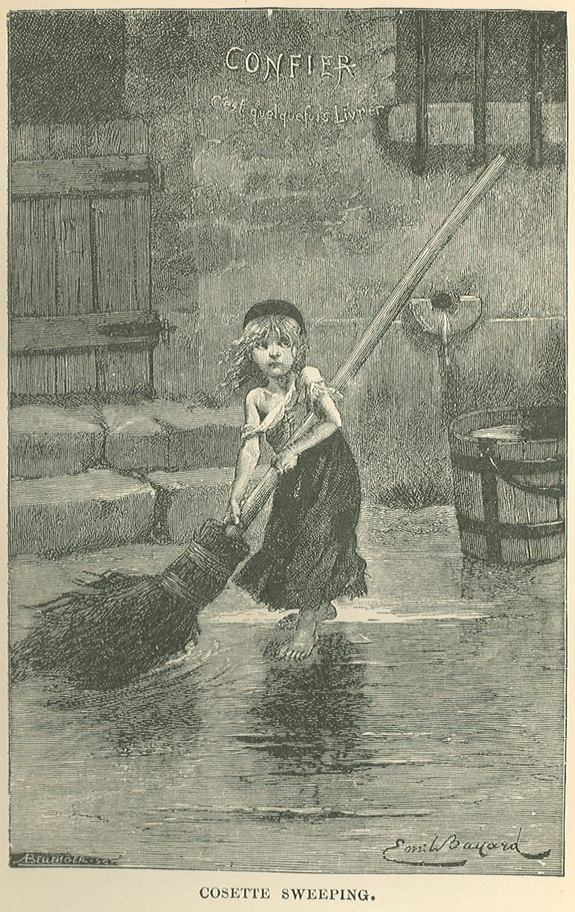
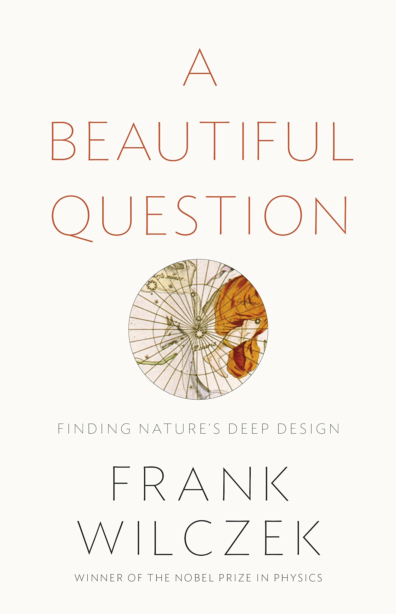
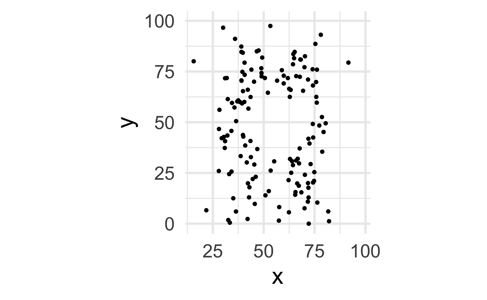
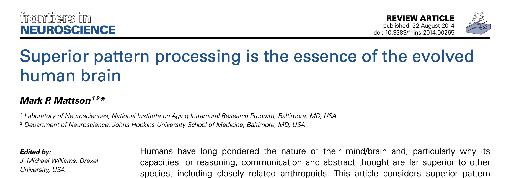
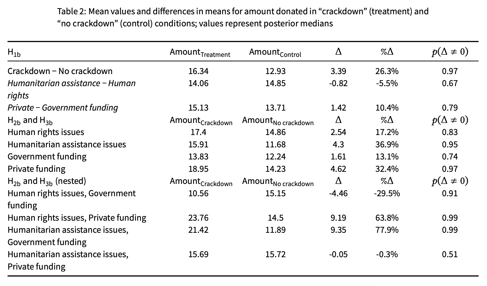
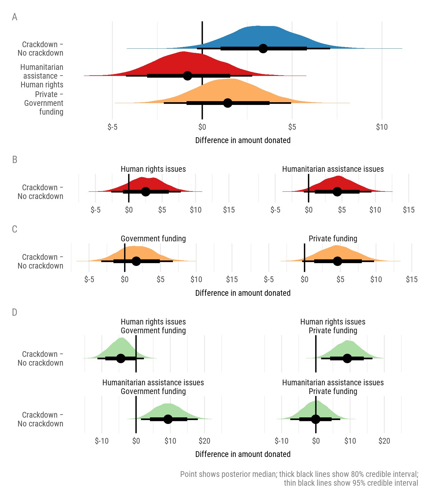

Welcome to INFO 3312/5312
Lecture 1
Cornell University
INFO 3312/5312 - Spring 2023
1/24/23
Agenda
Agenda
- Staff intros
- Themes of the course
- Facts, truth, and beauty
- What makes a good visualization?
- Course overview
- This week’s tasks
Staff intros
Meet the instructor
Dr. Benjamin Soltoff
Lecturer in Information Science
Gates Hall 216
Meet the course team
- Chuanrui L (grad TA)
- Jessica Z
- Kevin S
- Lincy C
- Michelle P
Meet each other!
03:00
Themes: what, why, and how
- What: the plot
- Specific types of visualizations for a particular purpose (e.g., maps for spatial data, Sankey diagrams for proportions, etc.)
- Tooling to produce them (e.g., specific R packages)
- How: the process
- Start with a design (sketch + pseudo code)
- Pre-process data (e.g., wrangle, reshape, join, etc.)
- Map data to aesthetics
- Make visual encoding decisions (e.g., address accessibility concerns)
- Post-process for visual appeal and annotation
- Why: the theory
- Tie together “how” and “what” through the grammar of graphics
Facts, truth, and beauty
What is truth?
- Core principles of the universe?
- Underlying trends in society?
- Something transcendental?
- Reality?
How do we find truth?
Science!
But wait!
Beware of scientism!
“… promotion of science as the best or only objective means by which society should determine normative and epistemological values”
Science is not the only way
- Art
- Music
- Literature
- Religion
- Nature
Nothing here is factual…
…but it all reveals truth
Cosette

The Bible
Beethoven’s 9th symphony
Facts \(\neq\) truth
Where does truth come when there are no facts?
Beauty
Beauty in science

This is also true for science and math and other more factual realms
Content + form
Art is how we translate core, essential content (or truth!) to different forms for specific audiences.
Truth is beautiful
Truth \(\neq\) facts
Truth comes from aesthetic combination of content and form
Facts require beauty to be true
Data, truth, and beauty
Just show me the data!
oh no
Raw data is not enough
Humans love patterns

(Sometimes we love them too much)
Pareidolia: seeing patterns that aren’t there.
Beauty is necessary to see patterns


Beautiful visualizations
What makes a great visualization?
- Truthful
- Functional
- Beautiful
- Insightful
- Enlightening
What makes a great visualization?
Graphical excellence is the well-designed presentation of interesting data—a matter of substance, of statistics, and of design … [It] consists of complex ideas communicated with clarity, precision, and efficiency. … [It] is that which gives to the viewer the greatest number of ideas in the shortest time with the least ink in the smallest space … [It] is nearly always multivariate … And graphical excellence requires telling the truth about the data.
What makes a great visualization?
- Good aesthetics
- No substantive issues
- No perceptual issues
- Honesty + good judgment
What’s wrong?
- Aesthetic issues
- Substantive issues
- Perceptual issues
- Honesty + judgment issues

What’s wrong?
- Aesthetic issues
- Substantive issues
- Perceptual issues
- Honesty + judgment issues
What’s wrong?
- Aesthetic issues
- Substantive issues
- Perceptual issues
- Honesty + judgment issues
What’s right?
- Aesthetic issues
- Substantive issues
- Perceptual issues
- Honesty + judgment issues
Course overview
Homepage
https://info3312.infosci.cornell.edu/
- All course materials
- Links to Canvas, GitHub, RStudio Workbench, etc.
- Let’s take a tour!
Course toolkit
All linked from the course website:
- GitHub organization: github.coecis.cornell.edu/info3312-s23
- RStudio Workbench: rstudio-workbench.infosci.cornell.edu
- Communication: GitHub Discussions
- Assignment submission and feedback: Gradescope
Important
Make sure you can access RStudio Workbench before lab on Friday.
Activities: Prepare, Participate, Perform
Prepare: Introduce new content and prepare for lectures by completing the readings
Participate: Attend and actively participate in lectures and labs, office hours, team meetings
Perform: Put together what you’ve learned to analyze real-world data
- Homework assignments x 6(-ish) (individual)
- Two team projects
Teams
- Team assignments
- Assigned by course staff
- Peer evaluation after completion
- Expectations and roles
- Everyone is expected to contribute equal effort
- Everyone is expected to understand all code turned in
- Individual contribution evaluated by peer evaluation, commits, etc.
Grading
| Category | Percentage |
|---|---|
| Homework | 50% |
| Project 1 | 20% |
| Project 2 | 30% |
See course syllabus for how the final letter grade will be determined.
INFO 5312
Additional expectations:
- INFO 5312 homework will at times be graded against a more stringent rubric
- INFO 5312 students will be grouped together for all projects
- Project rubric line items will have more stringent criteria for INFO 5312 students
- INFO 5312 students will complete an additional individual project during the semester
INFO 5312
| Category | Percentage |
|---|---|
| Homework | 40% |
| Project 1 | 15% |
| Project 2 | 25% |
| Individual project | 20% |
15 minute rule
Support
- Attend office hours
- Ask and answer questions on the discussion forum
- Reserve email for questions on personal matters and/or grades
- Read the course support page
Announcements
- Posted on Canvas (Announcements tool), be sure to check regularly (or forward announcements to your email)
- I’ll assume that you’ve read an announcement by the next “business” day
Diversity + inclusion
- I want you to feel like you belong in this class and are respected
- We are committed to full inclusion in education for all persons
- If you feel that we have failed these goals, please either let us know or report it, and we will address the issue
Accessibility
I want this course to be accessible to students with all abilities. Please feel free to let me know if there are circumstances affecting your ability to participate in class.
Course policies
Late work, waivers, regrades policy
- We have policies!
- Read about them on the course syllabus and refer back to them when you need it
Collaboration policy
Only work that is clearly assigned as team work should be completed collaboratively.
Homeworks must be completed individually. You may not directly share answers / code with others, however you are welcome to discuss the problems in general and ask for advice.
Sharing / reusing code policy
We are aware that a huge volume of code is available on the web, and many tasks may have solutions posted
Unless explicitly stated otherwise, this course’s policy is that you may make use of any online resources (e.g. RStudio Community, StackOverflow, etc.) but you must explicitly cite where you obtained any code you directly use or use as inspiration in your solution(s).
Any recycled code that is discovered and is not explicitly cited will be treated as plagiarism, regardless of source.
All code must be written by you, the human being.
Academic integrity
- A student shall in no way misrepresent his or her work.
- A student shall in no way fraudulently or unfairly advance his or her academic position.
- A student shall refuse to be a party to another student’s failure to maintain academic integrity.
- A student shall not in any other manner violate the principle of academic integrity.
Most importantly!
Ask if you’re not sure if something violates a policy!
This week’s tasks
- Log in to Cornell’s GitHub - you already have an account!
- Read the syllabus
Something personal